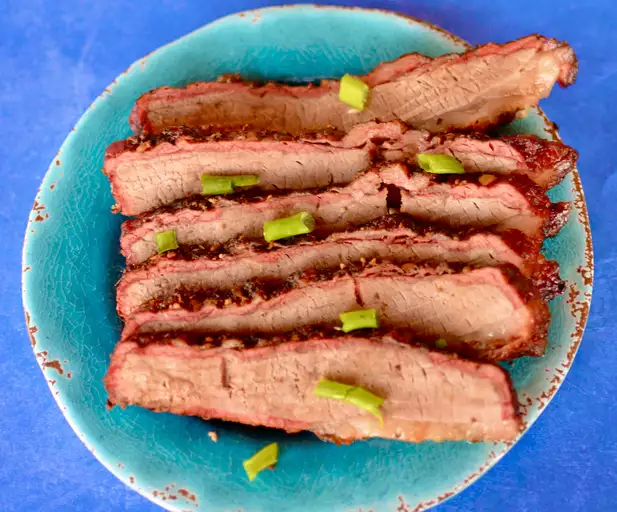

Main page
David's Mesquite Smoked Texas Brisket

Description
My husband David gets raves for his South Texas Dilly Digs Brisket. Please read the whole recipe thoroughly before you start.
Ingredients
- 8 pounds beef brisket
- 15 clovec garlic, peeled
- 1/4 cup Greek-style seasoning
Steps
- Make deep cuts into the brisket with a paring knife. Place cloves all the way into the cuts. Liberally sprinkle brisket with Greek seasoning.
- Place mesquite wood over gray/hot charcoals.
- Put brisket fat side down on the grill. Smoke for 2 hours and do not turn the meat.
- Take the meat out and wrap tightly 2 times in extra heavy aluminum foil. Put in the oven for 2 hours on a cookie sheet at 250 degrees F.
- Remove from oven and let sit (still wrapped in foil) 30 minutes to 1 hour before serving to let the meat "firm up" and the juice to be absorbed.